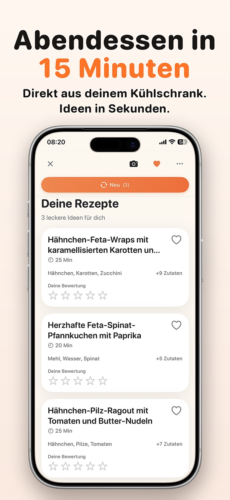
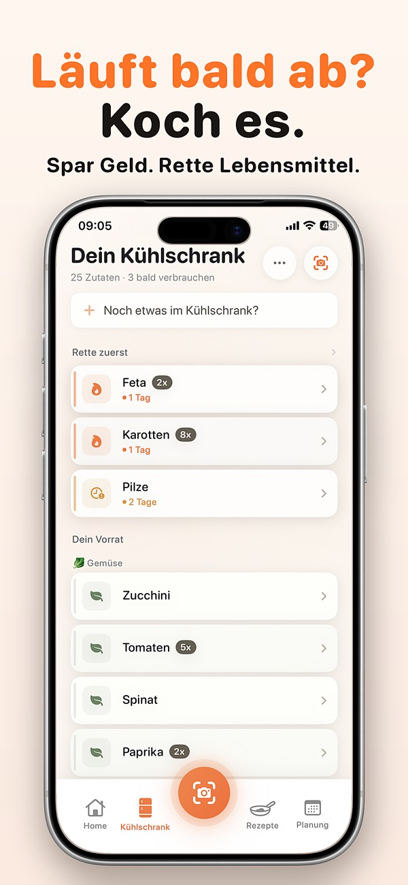
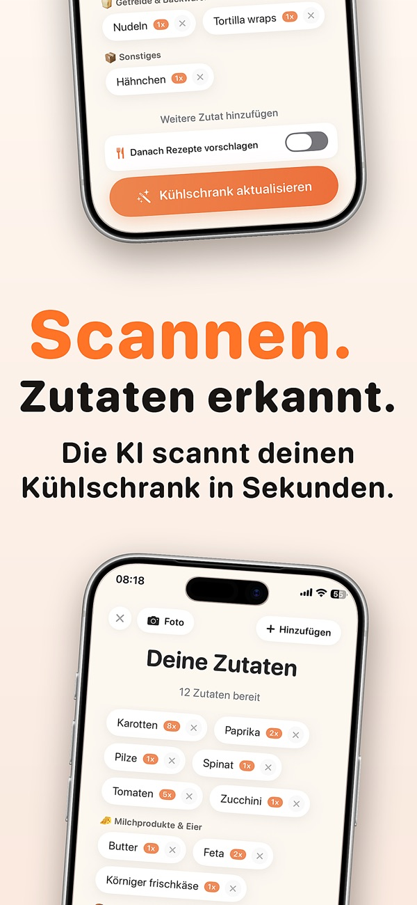
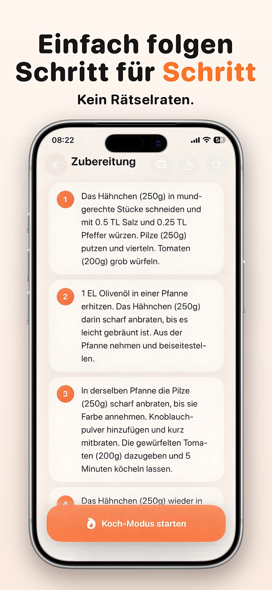

Uppetite schaut, was du schon da hast, und schlägt dir ein Abendessen vor, mit dem du in wenigen Minuten anfangen kannst. Ohne Wochenplan, ohne 500 Rezepte durchzuscrollen.
Gratis im App Store laden



Keine Rezeptsammlung zum stundenlangen Stöbern und kein Planer für die ganze Woche. Wer sieben Tage mit Einkaufsliste planen will, ist mit einer Wochenplan-App besser bedient. Uppetite ist für den Abend, an dem du hungrig und müde vor dem offenen Kühlschrank stehst.
Uppetite. Du fotografierst deinen Kühlschrank, und die App schlägt dir ein paar Gerichte vor, die du mit deinen Zutaten kochen kannst, statt dir Hunderte Rezepte zu zeigen.
Ja, genau das macht Uppetite: Es erkennt die Zutaten auf dem Foto, du korrigierst die Liste, danach kommen passende Rezepte mit Schritt-für-Schritt-Anleitung.
Laden und Rezeptideen sind gratis. Einige Premium-Funktionen brauchen ein Abo, die Preise stehen in der App.
Ja, Uppetite gibt es auf Deutsch und Englisch.
Noch nicht. Uppetite ist im Moment eine iPhone-App.